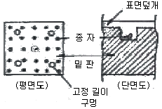

산림산업기사 (2013-08-18 기출문제)
1과목: 조림학
1. 묘포의 입지 조건으로 적합하지 못한 것은?
- 토양은 유기물의 함량이 많고 질소 함량이 많은 식양토일 것
- 관수와 배수가 편리할 것
- 가능한 조림지의 환경과 같은 곳일 것
- 노동작업 공급 등이 편리할 것
(정답률: 88%)

2. 군상 산벌작업은 다음 중 어떤 수종에 가장 알맞은 갱신법인가?(오류 신고가 접수된 문제입니다. 반드시 정답과 해설을 확인하시기 바랍니다.)
- 양수
- 등수
- 극양수
- 중용수
(정답률: 47%)
3. 제벌작업에 대하여 가장 올바르게 설명하고 있는 것은?
- 산림보육 순서로 보면 간벌작업 후에 실시하는 작업이다.
- 중간 일체 수입을 목적으로 하지 않는다.
- 농한기인 겨울철에 실시하는 것이 좋다.
- 제벌 모수는 어느 수종이나 1회 실시하는 것으로 충분하다.
(정답률: 68%)
4. 우량한 묘목을 능률적으로 양성하기 위하여 묘포입지를 선정할 때 유의해야 할 조건이 아닌 것은?
- 단단한 점토질토양이 알맞다.
- 관개와 배수가 동시에 편리한 곳이 좋다.
- 포지의 경사는 5° 이하의 환경사지가 바람직하다.
- 포지의 방위는 위도가 높고 한랭한 지역에서는 동남향이 좋다.
(정답률: 87%)
5. 나무의 수지에서 수분이 올라갈 때 최저의 저항을 받는 경로의 조직은?
- 피층
- 사부
- 부름켜
- 목부
(정답률: 82%)
6. 산림토양 내의 수분에서 개벌 전과 비교하여 개벌 후의 지하수위 높이는 어떻게 변하게 되는가?
- 높아진다.
- 낮아진다.
- 낮아졌다가 높아진다.
- 변화가 없다.
(정답률: 76%)
7. 환경 변화에 따른 수목의 기공기피를 설명한 것으로 틀린 것은?(오류 신고가 접수된 문제입니다. 반드시 정답과 해설을 확인하시기 바랍니다.)
- 온도가 높아지면(30~35℃) 기공이 닫힌다.
- 잎의 수분포텐셜이 낮으면 기공이 열린다.
- 엽육조직의 세포간극에 있는 CO2의 농도가 높으면 기공이 닫힌다.
- 인공합성이 가능한 정도의 광도이면 기공은 충분히 열린다.
(정답률: 77%)
8. 하종벌은 다음 중 어느 때 적용하는 것이 옳은가?
- 갱신 주기 때
- 하층식생이 많을 때
- 유령기 때
- 결실령이 많을 때
(정답률: 66%)
9. 일반적으로 식재 후 13-15년이 이른 임령에서 첫 번째 제벌작업을 실시하는 수종은?
- 소나무
- 삼나무
- 낙엽송
- 전나무
(정답률: 44%)
10. 종자발아촉진법 중에서 종자의 발아를 돕는 화학자극제가 아닌 것은?
- 지베를린
- 에틸렌
- 메탈렌
- 질산칼륨
(정답률: 58%)
11. 다음중 우량묘목이라 할 수 있는 것은?
- 줄기가 곧으며 도장된 것
- 묘목의 가지가 균형 있게 뻗고 정아가 완전한 것
- 근계중에 주근이 같고 곧고 세근이 적은 것
- T/R률의 값이 큰 것
(정답률: 75%)
12. 간벌의 실행에 관한 설명 중 바른 것은?
- 지위가 나쁠수록 자주 실행한다.
- 일반적으로 겨울 또는 봄에 실시한다.
- 낙엽송의 간벌개시 임령은 30~40년경이다.
- 활엽수의 경우 지위가 좋을수록, 개시시기가 느려진다.
(정답률: 65%)
13. 삽목 방식이 가장 잘되는 나무의 조합은?
- 밤나무, 소나무
- 낙우송, 느티나무
- 개나리, 회양목
- 아까시나무, 두릅나무
(정답률: 84%)
14. 다음 풀베기 방법 가운데 모두베기에 대한 설명으로 맞는 것은?
- 한풍해가 예상되는 곳에서 실시한다.
- 조림목이 음수 수종에 적응하면 좋다.
- 조림목에 광선을 제대로 주지 못하는 단점이 있다.
- 조림목을 남겨두고 그 지역의 모든 잡초목을 제거하는 방법이다.
(정답률: 80%)
15. 다음 중 발아 시험기간이 가장 긴 수종으로 짝지어진 것은?
- 사시나무, 느릅나무
- 아까시나무, 편백
- 전나무, 느티나무
- 소나무, 자작나무,
(정답률: 58%)
16. 묘령의 표시 중 1-1묘와 1/1묘의 설명이 옳은 것은?
- 1-1묘는 파종상에서 1년, 그 뒤 한 번 상체되어 1년을 지낸 2년생 묘목이고 1/1묘는 뿌리의 나이가 1년, 줄기의 나이가 1년인 삽목묘이다.
- 1-1묘는 뿌리의 나이가 1년, 줄기의 나이가 1년인 삽목묘이고 1/1묘는 파종상에서 1년, 상체해서 2년된 묘목이다.
- 1-1묘, 1/1묘 모두 뿌리의 나이가 1년, 줄기의 나이가 1년된 삽목묘이다.
- 1-1묘와 1/1묘 모두 파종상에서 1년, 그 뒤 한 번 상체해서 2년된 묘목을 가르킨다.
(정답률: 78%)
17. 종자의 품질을 나타내는 순량률은 종자의 무엇을 기준으로 한 것인가?
- 무게
- 수량
- 부피
- 크기
(정답률: 86%)
18. 파종조림의 성과가 비교적 용이한 수종이 아닌 것은?
- 소나무
- 전나무
- 해송
- 상수리나무
(정답률: 55%)
19. 식재된 묘목의 고사목을 보충해서 묘목을 심는 것을 보식이라고 한다. 고사율은 수종에 따라 다르나 일반적인 조건에 있어서 몇 % 인가?
- 1~10%
- 10~20%
- 20~30%
- 30~50%
(정답률: 61%)
20. 인공조림에 비해 천연갱신의 특징으로 틀린 것은?
- 실행하기 용이하다.
- 조림비용을 절감할 수 있다.
- 임지의 퇴화를 막을 수 있다.
- 임목의 생육환경을 그대로 잘 유지할 수 있다.
(정답률: 62%)
2과목: 산림보호학
21. 다음의 산림 해충 중에서 가장 잡식성인 해충은?
- 솔나방
- 텐트나방
- 미국흰불나방
- 오리나무잎벌레
(정답률: 73%)
22. 산불이 매우 발생하기 쉽고, 또한 소방이 가장 곤란한 대기의 관계습도는?
- 50% 이상
- 30% 이하
- 60% 이상
- 50~60%
(정답률: 86%)
23. 곤충의 내외부 형태에 관한 설명으로 틀린 것은?
- 입몸은 윗입술, 큰턱, 작은턱, 아랫입술로 구성된다.
- 가슴은 3개의 고리마다 구성되고 각 고리마다 3쌍의다리, 앞가슴과 가운데가슴에는 보통 1쌍식의 날개가 있다.
- 심장은 마디마다 다소 불룩하게 되어있어 이것 하나하나를 심실이라고 한다.
- 기체의 통로는 기본으로 하며 가슴에 2쌍, 배에3쌍, 모두10쌍이 원칙이지만, 종류에 따라 차이가 있다.
(정답률: 71%)
24. 공장, 자동차 등의 연료연소과정에서 나오는 질소산화물에 의해 수목이 피해를 받으면 특징적으로 나타나는 주피해 증후는?
- 황화현상
- 엽소현상
- 괴사현상
- 잎의 표면에 수침상의 반점 현상
(정답률: 51%)
25. 잣나무 털녹병 방제에 적합하지 않은 것은?
- 중간기주를 제거한다.
- 병든 나무를 제거한다.
- 내병성 품종을 심는다.
- 토양소독을 철저히 한다.
(정답률: 77%)
26. 다음 중 내화력이 약한 수종은?
- 벚나무
- 회양목
- 은행나무
- 가시나무
(정답률: 68%)
27. 수목 뿌리혹병(근두암종병:crown gall)의 병원체는?
- 바이러스
- 진균
- 파이토플라즈마
- 세균
(정답률: 65%)
28. 대추나무 빗자루병은 어떻게 전반되는가?
- 종자에 의한 전반
- 토양에 의한 전반
- 공기에 의한 전반
- 분주에 의한 전반
(정답률: 81%)
29. 밤바구미 구제에 쓰이는 약제로 틀린 것은?
- 트랄로에트린유제
- 펜토에이트분재
- 카바릴수화제
- 트리클로폰수화제
(정답률: 34%)
30. 아까시잎혹파리의 활동생태와 활동장소의 연결이 옳은 것은?
- 번데기-수피층
- 번데기-땅속
- 알-수피층
- 알-땅속
(정답률: 35%)
31. 야생동물군집 형성을 위한 임분 관리방법에 해당되지 않는 것은?
- 택벌
- 망간 숲 틈 조성
- 혼효림 복층림화
- 순림위주의 산림 관리
(정답률: 79%)
32. 나무의 수피와 목집부 표면을 환상으로 식재하여, 거미줄을 토하여 식해부위에 침해 놓는 해충은?
- 광릉긴나무좀
- 알락하늘소
- 잣나무넓적잎벌
- 박쥐나방
(정답률: 74%)
33. 상주에 대한 설명으로 틀린 것은?
- 서릿밭 또는 동상이라고 부른다.
- 눈이 적게 오고 더운 지역의 산지에 묘목을 가을에 식재하면 그 직후에 상주피해를 입는 일이 많다.
- 상주가 심한 곳에서 천근성 묘목이 틀어올려져 뿌리가 절단되는 현상이 발생한다.
- 삽주의 피해를 방지하기 위해서는 모래 등을 섞어 토질을 개량한다.
(정답률: 61%)
34. 화학적 방제 중 약제의 유효성분을 가스 상태로 하여 해충의 기공을 통하여 호흡기에 침입시켜 사망시키는 것은?
- 소화중독제
- 제충제
- 침투성 살충제
- 훈증제
(정답률: 76%)
35. 염풍에 강한 수종은?
- 배나무
- 벚나무
- 금송
- 소나무
(정답률: 64%)
36. 병환부나 죽은 기주체 상에서 월동하는 병균이 아닌 것은?
- 밤나무 줄기마름병균
- 오동나무 탄저병균
- 낙엽송 잎떨림병균
- 잣나무 털녹병균
(정답률: 44%)
37. 곤충의 소화계에서 기계적 소화가 일어나는 것은?
- 전장
- 중장
- 후장
- 후소장
(정답률: 58%)
38. 잣나무털녹병의 중간 기주는?
- 송이풀
- 참취
- 잔대
- 고사리
(정답률: 81%)
39. 벚나무 빗자루병의 설명으로 틀린 것은?
- 병원균은 가지 내 세포간극에서 수년간 살면서 가지를 굵게 하고 매년 빗자루병을 만든다.
- 포플러나 복숭아의 잎에서는 잎의 뒷면에 나줄자낭을 형성하고 오갈병을 일으킨다.
- 봄에 꽃이 피지 않는다.
- 병은 가지를 계속 신속하게 제거해도 박멸을 할 수 없다.
(정답률: 53%)
40. 대추나무 빗자루병 방제에 가장 효과적인 약제는?
- 페니실린
- 보르도액
- 석회황합제
- 옥시테트라사이클린
(정답률: 82%)
3과목: 임업경영학
41. 입업경영의 목적에 따라 결정하여야 할 벌기령 중 벌기평균생장량이 최대가 되는 때를 벌기령으로 결정하는 것은?
- 토지순수익 최대의 벌기령
- 수익률 최대의 벌기령
- 화폐수익 최대의 벌기령
- 재적수확 최대의 벌기령
(정답률: 79%)
42. 흉고형수에 영향을 미치는 인자가 아닌 것은?
- 수고
- 지위
- 벌기령
- 수종과 품종
(정답률: 56%)
43. 입엄소득의 계산 요소인 임업조수익때 포함되는 것은?
- 감가삼각액
- 주림목 감소액
- 미처분 임산물 증감액
- 임업현금지출
(정답률: 76%)
44. 매목조사는 측정 대상지 각 임목의 어떤 인자를 측정하는가?
- 흉고직경
- 수고
- 흉고단면적
- 흉고형수
(정답률: 57%)
45. 임지기망가 산출 공식에서 다른 인자가 변하지 않는다는 기점 하에서 이율이 높을수록 임지기망가는 어떻게 변화하는가?
- 작아진다.
- 커진다.
- 관련없다.
- 일정하다.
(정답률: 79%)
46. 직경을 측정할 때 수피를 포함하는 경우와 수피를 뺀 목질 부만을 직경으로 나누어 생각할 수 있다. 다음에서 수피를 측정하는 기구는?
- 윤척
- 수피후측정구
- 빌티모아 스틱
- 섹터 포크
(정답률: 68%)
47. 법정림에서 법정상태 요건으로 틀린 것은?
- 법정영급분배
- 법정수확
- 법정축적
- 법정생장량
(정답률: 70%)
48. 임령이 24년인 임목을 수간석해 하였을 때 단면 번호 1번의 연륜수가 19개이다. 이 임목이 1.2m 자라는데 소요된 기간은?
- 1년
- 5년
- 6년
- 7년
(정답률: 70%)
49. 임업경영의 성과를 나타내는 가장 정확한 지표는?
- 임업조수익
- 임업소득
- 임업 현금수입
- 임업총수입
(정답률: 80%)
50. 한 윤벌기에 대한 벌채안을 만들고 각 분기마다 벌채량을 균등하게 하여 재적수확의 보속을 도모하는 방법은?
- 생장량법
- 재적평분법
- 임분방제법
- 구획윤벌법
(정답률: 73%)
51. 유령림의 임목평가 방법은?
- 비용가법
- 기망가법
- 매매가법
- 환원가법
(정답률: 81%)
52. pressler의 지조를 계산에 사용되는 임목 인자는?
- 직경, 수관
- 수고, 지하고
- 흉고단면적, 직경
- 지하고, 직경
(정답률: 38%)
53. 산림의 규모가 작은 사유림의 경영에서 볼 수 있는 경영형태로서 자기자본만을 가지고 경영하며 모든 기업의 위험을 전부 부당하는 임업경영의 형태는?
- 단독사기업
- 집단사기업
- 공기업
- 공사협동기업
(정답률: 82%)
54. 육림비의 구성 중에서 가장 큰 비중을 차지하는 것은?
- 지대
- 운재비
- 이자
- 노동비
(정답률: 72%)
55. 산림경영의 지도원칙 중 경제원칙에 해당하는 것은?
- 합자연성 원칙
- 공공성의 원칙
- 환경보전의 원칙
- 보속성의 원칙
(정답률: 40%)
56. 임업경영의 형태 중 주업적 임업경영의 유형이 잘못된 것은?
- 식재→육림→벌채→완료원목공금(제지)
- 식재→육림→표고생산·제탄·제제
- 식재→육림→임목매각
- 식재→육림→벌채→원목매각
(정답률: 64%)
57. 다음 중 임업노동의 능률을 향상시킬 수 있는 방법으로 거리가 먼 것은?
- 작업 방법을 개선·개발한다.
- 작업단을 조작하고 운영한다.
- 농촌 노동력의 유출을 막는다.
- 기계·가구률 개발, 개량하여 보급한다.
(정답률: 83%)
58. 임분밀도를 나타내는 적도 중 우세목의 수고에 대한 입목간 평균거리의 백분율을 의미하는 것은?
- 입목도
- 상대밀도
- 임분밀도지수
- 상대공간지수
(정답률: 58%)
59. 임업투자 경쟁 중 현금유입을 통하여 투자금액을 회수하는데 소요되는 기간을 가지고 투자 결정을 하는 방법은?
- 내부수익률법
- 수익·비용비법
- 순현재가치법
- 회수기간법
(정답률: 75%)
60. 임지기망가에 대한 설명으로 맞는 것은?
- 임지에서 장래 기대되는 순이익의 현재가 합계로써 정한 가격이다.
- 임지에서 장래 기대되는 순이익의 후가합계로써 정한 가격이다.
- 임지에서 기대되는 원가합계로써 정한 가격이다.
- 임지에서 기대되는 추가합계로써 정한 가격이다.
(정답률: 63%)
4과목: 산림공학
61. 물매가 1:1보다 완만한 비탈면이나 평탄한 나지에 안정녹화를 목적으로 둔떼를 전면적으로 떼붙이기하는 공법은?
- 평떼붙이기공법
- 선떼붙이기공법
- 중떼붙이기공법
- 세심기공법
(정답률: 79%)
62. 일반적으로 산사태와 땅밀림의 차이에 대하여 잘못 설명되어 있는 것은?
- 산사태는 지질과의 관계가 작다.
- 땅밀림은 주로 사질토를 미끄럼면으로 활동한다.
- 산사태는 10mm/day 이상으로 속도가 대체로 빠르다.
- 땅밀림은 토과의 흐트러짐이 적고, 원형을 보존하면서 이동하는 경우가 많다.
(정답률: 52%)
63. 가장 간단한 방법으로서 산허리의 경사면에 따라 약간의 인공을 가한 도량을 이용하는 중력에 의한 집재방법은?
- 토수라
- 도수라
- 묵수라
- 플라스틱수라
(정답률: 48%)
64. 기계력에 의한 집재방법 중 야더집재기와 비교하여 트랙터 집재기의 특징으로 틀린 것은?
- 기동성이 크므로 어느 정도의 도로가 있으면 실행된다.
- 역으로부터 선으로 확대하여 집재작업이 된다.
- 견인력이 크므로 한번에 다량의 목재를 반출 할 수 있다.
- 저축이므로 장거리운반에는 바람직하지 못하다.
(정답률: 52%)
65. 집재가선에 있어서 와이어로프에 작용하는 하층에 대해 충분한 안전을 확보하기 위해서는 각 용도별로 안전계수를 결정하여 사용해야 한다. 스카이라인(가공본줄)의 안전계수는 얼마인가?
- 1.0 이상
- 1.5 이상
- 2.0 이상
- 2.7 이상
(정답률: 52%)
66. 지표면유출현상이 계속적으로 일어날 때 소규모에 의한 흐름 때문에 생기는 것은?
- 빗방울침식
- 면상침식
- 구곡침식
- 누구침식
(정답률: 46%)
67. 산림관리기반시설의 설계 및 시설기준에 따라 임도시공을 할 때 경암지역(암석지)의 점토 경사면 기울기는 얼마로 설정하는가?
- 1:0.2 ~ 0.3
- 1:0.3 ~ 0.8
- 1:0.8 ~ 1
- 1:0.8 ~ 1.2
(정답률: 65%)
68. 다음 그림과 같이 밑판, 종자 및 표면덮개의 3부분으로 구성된 일반적으로 인공떼제품을 무엇이라고 하는가?

- 식생자루
- 식생매토
- 식생대
- 식생반
(정답률: 69%)
69. 깍아 낸 보통 흙의 경우 일반적인 평창율은 얼마인가?
- 5 ~ 10%
- 10 ~ 20%
- 20 ~ 30%
- 30 ~ 40%
(정답률: 43%)
70. 트랙터 집재작업 능률에 미치는 인자가 아닌 것은?(오류 신고가 접수된 문제입니다. 반드시 정답과 해설을 확인하시기 바랍니다.)
- 경사
- 단재적
- 임도밀도
- 입목의 소밀도
(정답률: 20%)
71. 다음 중 쇄석도의 종류가 아닌 것은?
- 역점머캐덤도
- 자갈머캐덤도
- 시멘트머캐덤도
- 수제머캐덤도
(정답률: 44%)
72. 사리도에 대한 설명으로 틀린 것은?
- 자갈을 노면에 깔고 교통에 의한 자연전압으로 노면을 만든 것이다.
- 노반의 시공방법은 크게 상치식과 상굴식으로 구분할 수 있다.
- 하중일수록 잔자갈을, 표충에 가까울수록 굵은 자갈을 표층하는 것이 좋다.
- 결함재료는 점토나 세점토사 등이 이용되며, 결합재는 적절량은 자갈 무게의 10~15%가 알맞다.
(정답률: 74%)
73. 산사태 발생의 내적요인(소인)이 아닌 것은?
- 지질구조
- 지형
- 강우
- 임상
(정답률: 57%)
74. 일반적으로 예불기는 정면으로부터 톱날의 회전방향으로 약 몇도의 부분이 절단효율이 가장 좋은가?
- 30 ~ 40도
- 40 ~ 50도
- 50 ~ 60도
- 60 ~ 70도
(정답률: 28%)
75. 해안사지 조림용 수종이 구비해야 할 일반적인 조건이 아닌 것은?
- 바람에 대한 저항력이 클 것
- 양분과 수분에 대한 요구가 클 것
- 온도의 급격한 변화에도 잘 견디어 낼 것
- 울폐력이 좋고 낙엽 낙지 등에 의하여 지력을 증진시킬 수 있을 것
(정답률: 81%)
76. 절도한 목재를 통째로 집재하는 것은?
- 전목집재
- 전간집재
- 보통집재
- 인력집재
(정답률: 86%)
77. 직선부를 차량이 통과하기 위해 국선부에 취해야 할 사항은?
- 곡선부의 노면 안쪽을 바깥쪽보다 높게 한다.
- 곡선부의 노면 안쪽을 바깥쪽보다 낮게 한다.
- 양쪽으로 내림물매를 준다.
- 물매를 주지 않는다.
(정답률: 72%)
78. 평면도상의 임도곡선의 종류가 아닌 것은?
- 단곡선
- 복심곡선
- 배향곡선
- 종단곡선
(정답률: 65%)
79. 중력댐의 안정조건이 아닌 것은?
- 기초지반의 지지력에 대한 안정
- 전도에 대한 안정
- 활동에 대한 안정
- 물매에 대한 안정
(정답률: 57%)
80. 임목수확작업에서 필요한 안전수칙과 거리가 먼 것은?
- 과중한 작업은 기계력을 이용한다.
- 인력에 의한 작업시 중력을 최대한 이용한다.
- 안전을 위한 보호 장비는 반드시 작용한다.
- 소규모 간단한 작업도 다공정 기계를 이용한다.
(정답률: 69%)